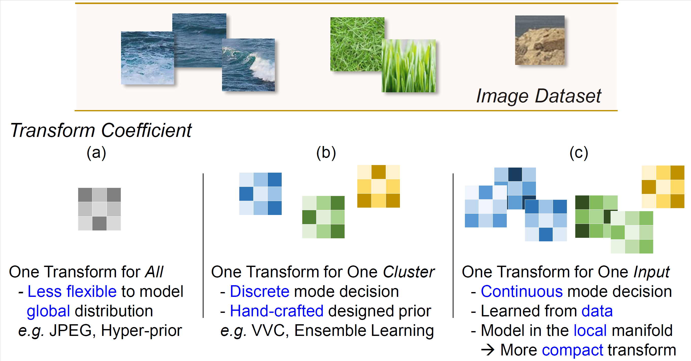

Abstract
Learned image compression has achieved great success due to its excellent modeling capacity, but seldom further considers the Rate-Distortion Optimization (RDO) of each input image. To explore this potential in the learned codec, we make the first attempt to build a neural data-dependent transform and introduce a continuous online mode decision mechanism to jointly optimize the coding efficiency for each individual image. Specifically, apart from the image content stream, we employ an additional model stream to generate the transform parameters at the decoder side. The presence of a model stream enables our model to learn more abstract neural-syntax, which helps cluster the latent representations of images more compactly. Beyond the transform stage, we also adopt neural-syntax based post-processing for the scenarios that require higher quality reconstructions regardless of extra decoding overhead. Moreover, the involvement of the model stream further makes it possible to optimize both the representation and the decoder in an online way, i.e. RDO at the testing time. It is equivalent to a continuous online mode decision, like coding modes in the traditional codecs, to improve the coding efficiency based on the individual input image. The experimental results show the effectiveness of the proposed neural-syntax design and the continuous online mode decision mechanism, demonstrating the superiority of our method in coding efficiency compared to the latest conventional standard Versatile Video Coding (VVC) and other state-of-the-art learning-based methods.

Three transform paradigms. (a) Single transform adopted in previous end-to-end trained image compression methods. (b) Cluster-specified transform utilized in conventional image codecs. (c) Proposed data-dependent transform.
Key ideas with related formulations of image compression. (a) Previous learned image compression. (b) Hybrid coding framework. (c) Our dual-stream learned image compression with the data-dependent transform.
Method
Framework of our proposed data-dependent image compression method. Based on the baseline model [1], we further introduce model stream to extract data-specific description, i.e. Neural-Syntax (red lines in the figure). Neural-Syntax is then sent to the decoder side to generate the decoder weights.
Selected Experimental Results
R-D curves on Kodak and CLIC Professional Validation Set .
Resources
Paper: To Update
Code: To Update
Resources
[1] Jooyoung Lee, Seunghyun Cho, and Seung-Kwon Beack, "Context adaptive entropy model for end-to-end optimized
image compression", ICLR 2019.